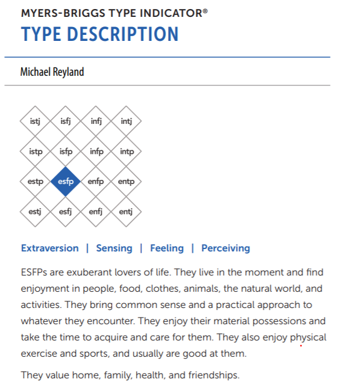
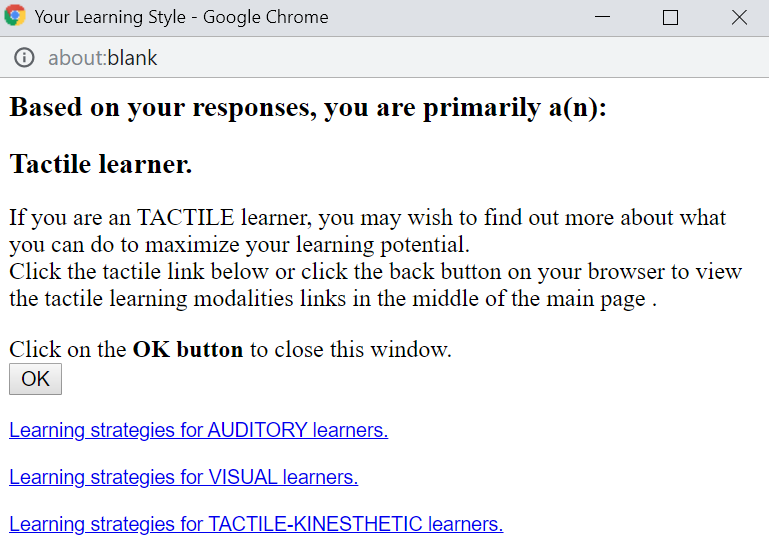
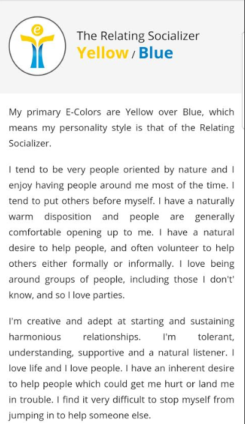

Personality Test Results
In this section we provide commentary on how the various personality test results may be helpful to the group. Our individual test results are summarised below, for more detailed information please visit our individual profile websites from Assignment 1.
How can these results help the team?
The test results weren't available at the time of forming teams for Assignment 2, so we were unable to realise the benefits of using the results to select a team and its members. Regardless, there is benefit in reviewing the results now the team is formed and Assignment 1 has been submitted. We are able to immediately learn something about our team members personalities and how they like to function in a team. This will help with forming the team dynamic and how we communicate with each other throughout the course of the group assignment, especially given most of our communication will be chat based via Microsoft Teams or RMIT Canvas.
Michael Reyland
Myers-Briggs

Learning Style Test

Equilibria Report

Ben Tomlinson
Myers-Briggs
VAK Test (PersonalityMax)
123Test Team Roles
Krystien Hart
Myers-Briggs
Learning Style Test - Education planner

DiSC Profile

Anthony Smith
Humanetrics
Humanmetrics.com. (2019). INTJ: Leverage Your Personality Type. [online] Available at: http://www.humanmetrics.com/personality/intj-type?EI=-19&SN=-19&TF=44&JP=41 [Accessed 6 Sep. 2019].
INTJ Introvert(19%) iNtuitive(19%) Thinking(44%) Judging(41%)
• You have slight preference of Introversion over Extraversion (19%)
• You have slight preference of Intuition over Sensing (19%)
• You have moderate preference of Thinking over Feeling (44%)
• You have moderate preference of Judging over Perceiving (41%)
Learning Style Test - How To Study
How-to-study.com. (2019). Determine My Learning Style. [online] Available at: https://www.how-to-study.com/learning-style-assessment/ [Accessed 6 Sep. 2019].
Result: VISUAL Learning style.
Big Five Personality Test - Truity
Available at: https://www.truity.com/test/big-five-personality-test [Accessed 11 Sep. 2019].
This Big Five assessment measures your scores on five major dimensions of personality: Openness, Conscientiousness, Extraversion, Agreeableness, and Neuroticism (sometimes abbreviated OCEAN).
Your Personality Trait Scores OCEAN = O:46% C:75% E:46% A:31% N:58%